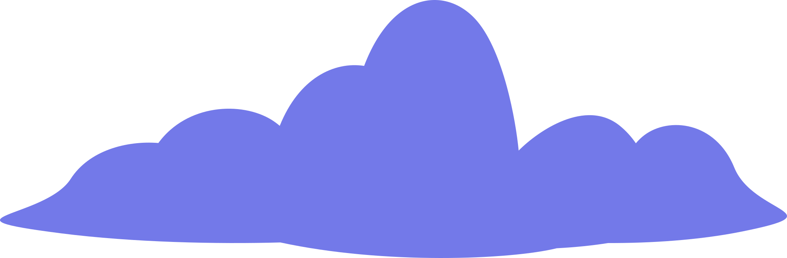
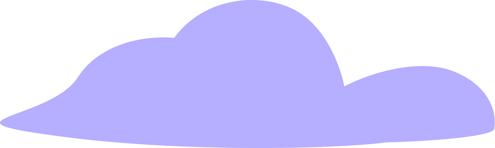
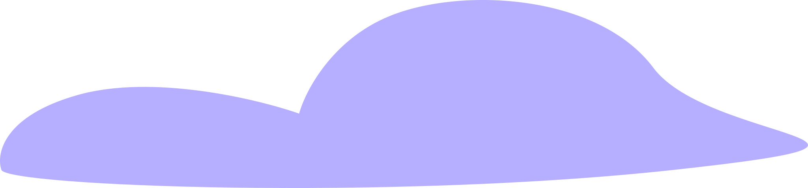
hi i am
marcela estrada
your local creative front-end engineer
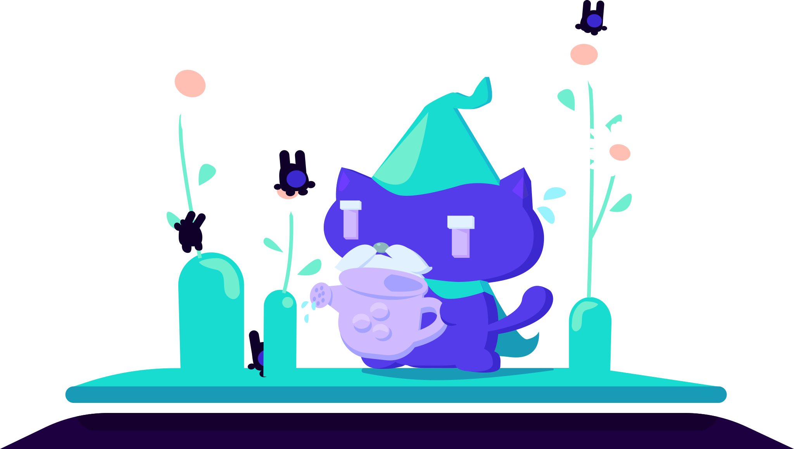
about me
Hi there! Thanks for visiting my website. I'm a developer and
illustrator based in the US. I love the act of creating and found a
sweet spot between art and code.
Currently I work as a front-end engineer, working on story-telling and
mapping applications.
Some history...
I've always gravitated towards drawing and coloring since I was child, and at some point I got really into running so I figured my career might involve one of those two (I figured really soon that I'm naturally slow so that was off the table pretty fast).
One of my oldest memories about coding was back when I was about 16. I was studying Informatics at a technical college in Mexico, and I remember my professor demoing a program that involved a door opening and closing in visual. I thought it was neat that we could program things that people could see.
Once in college, I did switch majors a few times and eventually graduated with a B.S. in Sciences with majors in Art/Graphic Design and Computer Science. For work I knew I wanted to do something that combined the two in some way, and found that in front-end development.
dev stuff
My specialty is the UI end of things. I primarily work with React,
Typescript, CSS and the arcGIS JSSDK at my current job.
I work closely with other developers, product engineers and designers
to bring an idea to life, fix pesky bugs, improve accesibility, or to
share knowledge that will help the team.
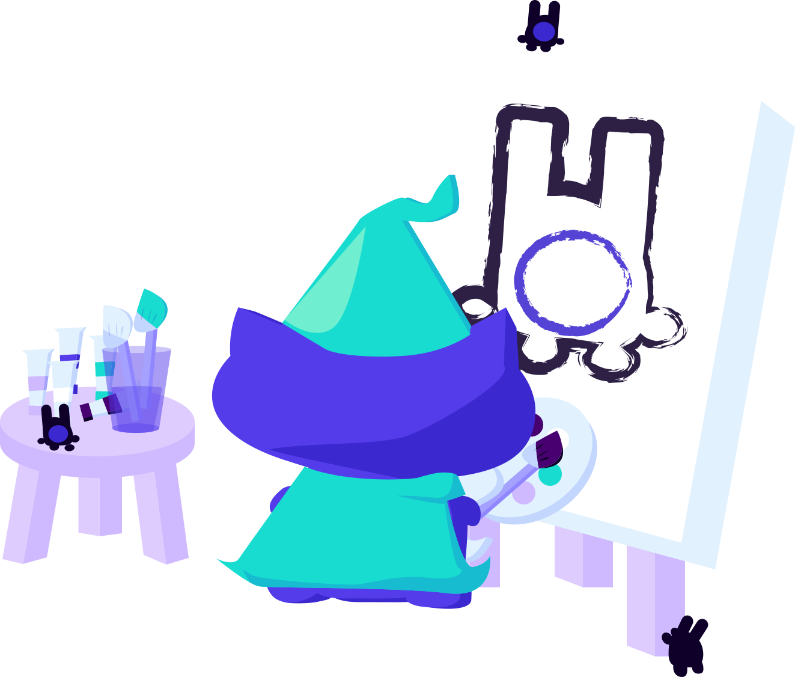
art
I've dabbled in many mediums, and I like to think I have built an eye
for color and composition. There are areas I would love to improve on
but I've gotten to the point where I am happy with my current skill
level and overall enjoy the process of creating.
It's also something that I'm proud of, think it looks good and will
obviously show off on my personal website, lol.
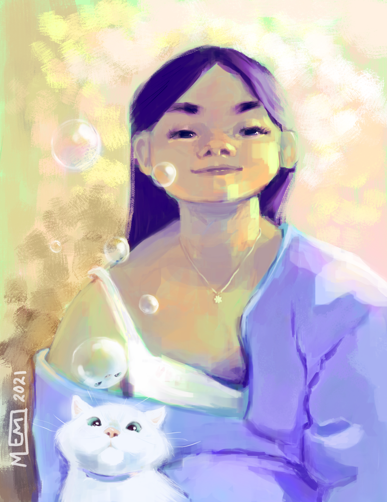
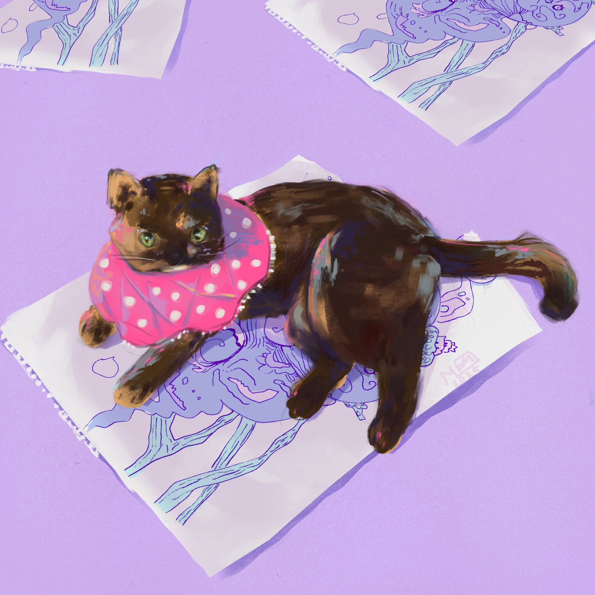
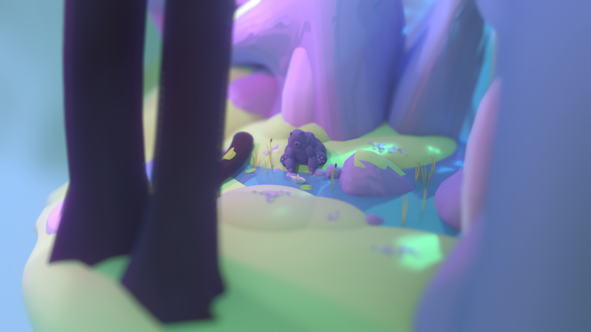
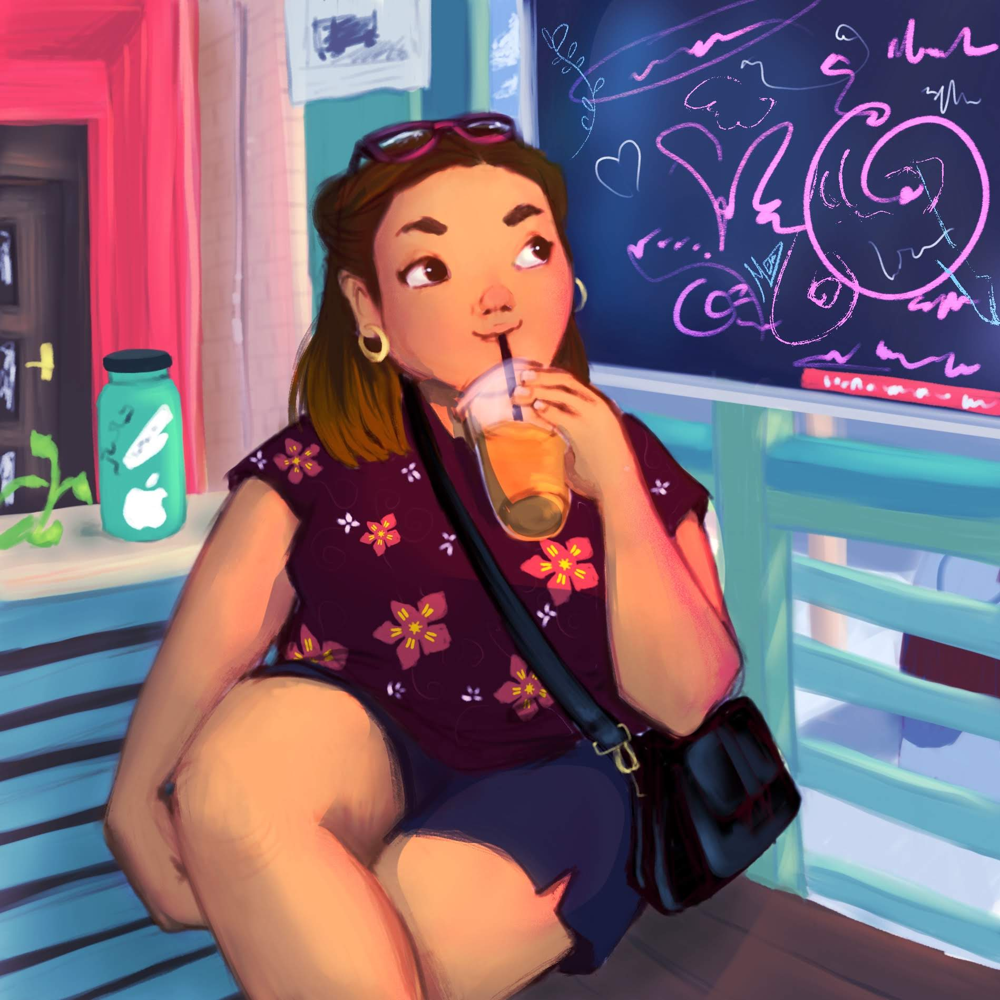
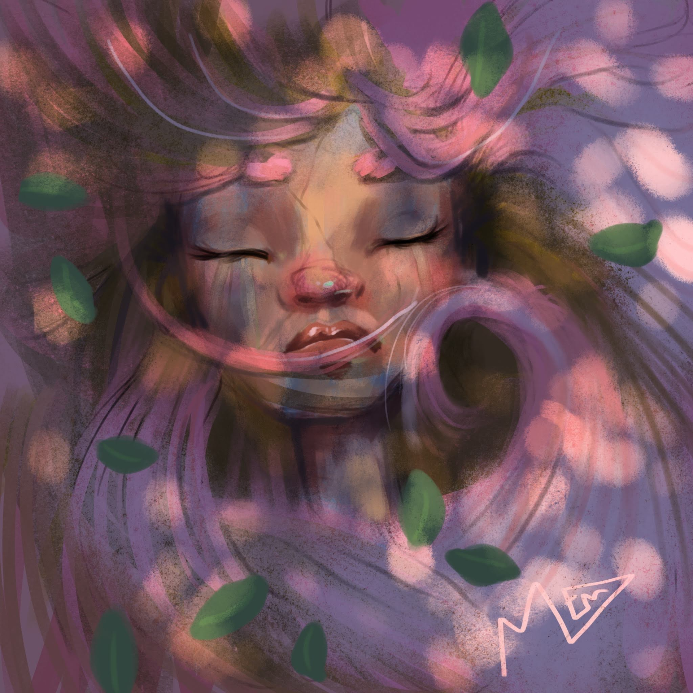
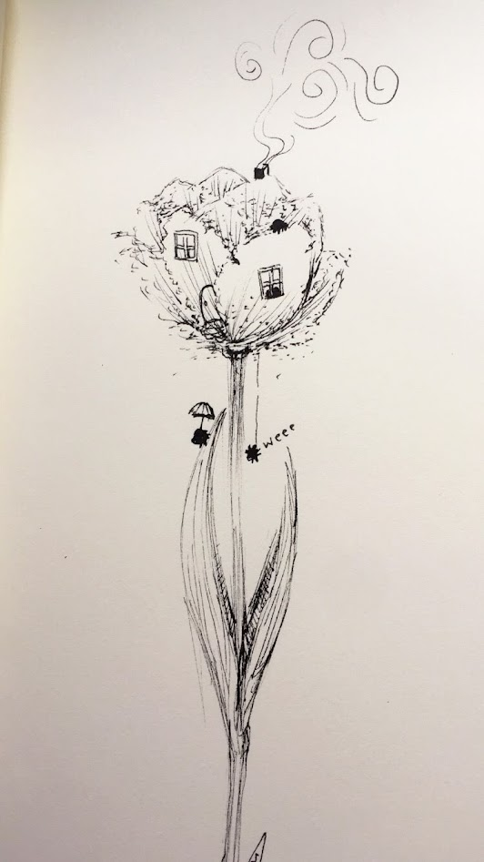
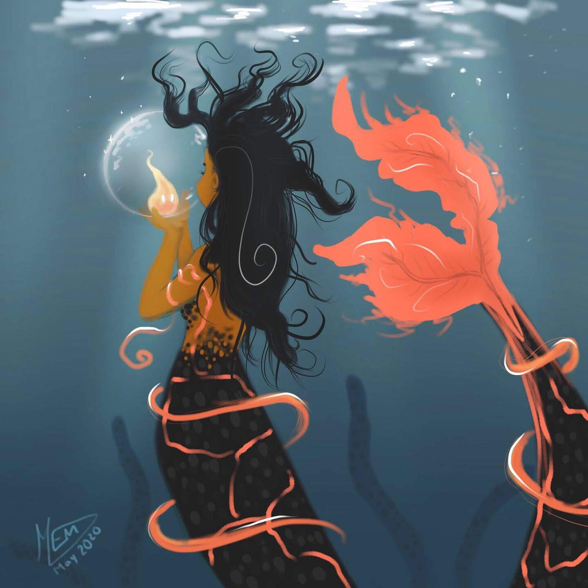